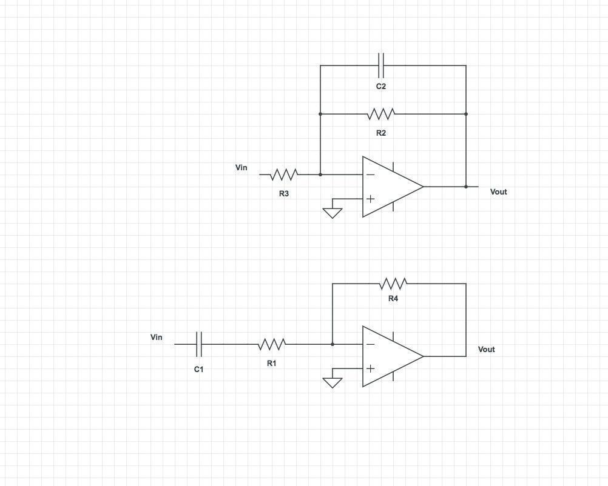
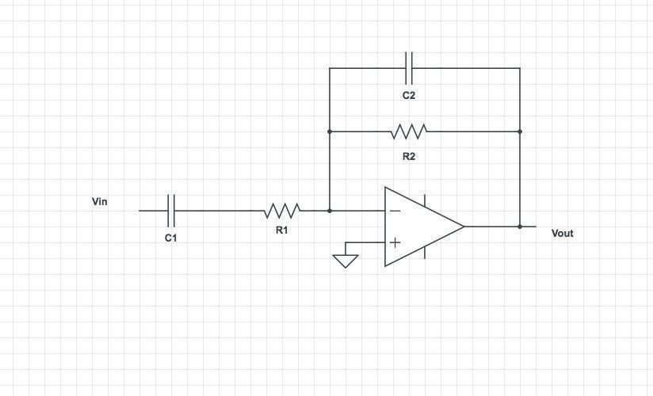
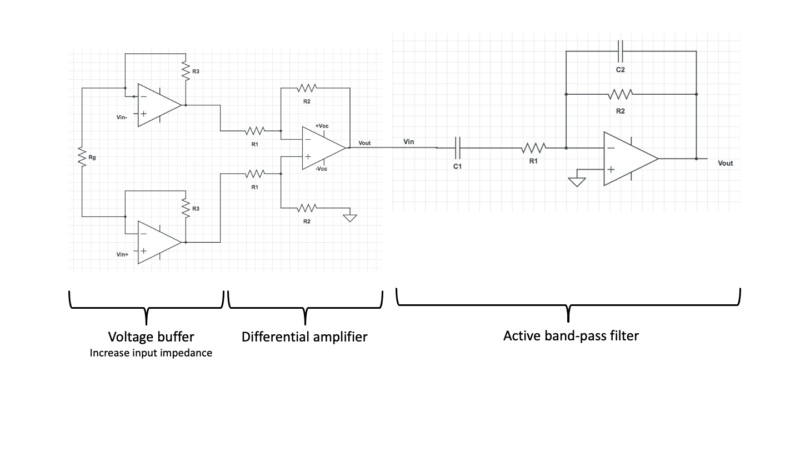

TENSS 2026 - Electronics Practical
Picoscope software download link:
https://www.picotech.com/downloads/_lightbox/picoscope-7-stable-for-windows
Component reference:
Resistor
A passive1 circuit element that resists the flow of current. You can think of them like constrictions in a water pipe. They are non-polarized (so it doesn't matter in which direction you put them) and look like this:

The color code indicates the resistance (the amount of constriction in the pipe). However, it is often easier just to measure them using an ohmmeter instead of memorizing the color code :).
Capacitor
A passive2 circuit element that resists changes in voltage and passes AC currents. You can think of them like diaphragms in a water pipe. Some are non-polarized and others are. If you reverse-polarize the latter, the magic blue smoke that's inside them and allows them to work will escape! Don't let the magic blue smoke out because it's very hard to put it back inside.

Switch (Push Button)
A simple mechanical device that can connect or disconnect an electrical path. The switches in your kit are momentary tactile push buttons, meaning they only make contact while you are actively pressing them down.

Because the pairs of pins (connected by the green and blue lines) are permanently shorted even when the button is not pressed, it is easy to accidentally bypass the switch. To use it correctly, either place the switch across the middle ravine of the breadboard or place the pins of one of the pairs in the same horizontal row on the breadboard.
Op-amp
An op-amp is short for operational amplifier. It is a ubiquitous active3, analog integrated circuit. It looks like this:


An op-amp is a voltage amplifier and will produce an output voltage that is equal to the difference between the positive (non-inverting) and negative (inverting) input voltages times a gain. The gain is fixed and is absolutely huge (on the order of 1e6). Their output is limited by their power supply rails (V+ and V-; also labeled VCC and VSS, respectively). If you want the output of an op-amp to be an amplified version of the input, rather than just bouncing back and forth between the supply rails, you must tame them using negative feedback to reduce the effective voltage gain. We will do that for all the circuits we use them in.
Breadboard
A breadboard is a convenient way of prototyping circuits. It has the following connection diagram.


Multimeter
A multimeter is a tool for measuring static (things that don't change quickly over time) characteristics of circuits. They can measure resistance, capacitance, DC current, DC voltage, and the amplitude of AC signals. They cannot measure a time series. Multimeters are "floating" compared to earth. This means it's safe to put their probes at any point in the circuit when measuring voltage because they have no preference for what ground is. Current measurements use a low-value shut resistor in series with the probe that can, e.g. short power supplies.

Oscilloscope
A piece of test equipment that allows observation of time varying voltages. It can plot voltage as a function of time and detect voltage events using threshold crossing (this is called "triggering"). Some have other functions built in as well, such as the ability to generate voltage waveforms. We will be using one of these for this course.
NOTE: Almost all oscilloscopes, including ours, are mains earth referenced. This means that the outer shells of the BNC connections in the front of them are connected to earth ground (third prong on wall plug). USB on a computer that is powered through mains-power cord is also mains earth referenced. Therefore it's quite easy to create unintended circuits with the ground lead on scope probes. Be careful where you put it.


Oscilloscope Probe
A special cable that is connected to the input of an oscilloscope and is used to probe voltages on the circuit under test. Scope probes are designed to reduce the effect of the oscilloscope's measurement on the circuit operation (reduce its "loading"). They do this by attenuating the voltage before it is measured and compensating for the parasitic capacitance of the cable itself (how do you think they attenuate the voltage...?). The degree of attenuation is indicated by the probe (e.g. 1x, 10x, 100x for divide by 1, 10, and 100, respectively) and must be accounted for in the scope to get accurate voltage amplitudes. Some probes have a selectable attenuation. We want to keep our probes in 10x.
NOTE: You must tell your scope software that you are using a 10x attenuating probe so that it can multiply its captured values by 10.

Microcontroller Development Board
A microcontroller is a single-chip computer. It has a CPU, RAM, and peripheral interfaces. They typically don't use an operating system and therefore can run simple programs with a high degree of regularity (there are no 'hiccups' while the computer is 'thinking'). Therefore they are good for acquiring data using analog-to-digital converters or generating signals using a digital-to-analog converter. We will be using either Arduino USB, Teensy, or Pico development boards during the course. These are all small microcontroller boards that provide easy access to the microcontroller's pins and allow you to load programs using USB. The programs are written in C++ and uploaded using a device-specific tool.

Power Supply: Benchtop power supplies are designed to prove an adjustable, low-output impedance voltage source to power electronics under test. They can be isolated from the mains ground or non-isolated. Bipolar (positive and negative voltage) or unipolar (only one voltage). Supply hundreds of volts, hundreds of amps, or combinations of all of these. They can be linear (use passive elements and a feed-back regulated MOSFET) or switch-mode (using a DC/DC converter inside).
We have some simple, linear, isolated supplies. They have two dials. One adjusts the voltage, the other adjusts the current limit. Keep the current limit in the center. They are touchy. It's best to set the voltage and test with a multimeter, before plugging it into a circuit. We'll only really need these at the end when we record from cockroach legs.

In addition to the benchtop supplies, we have homemade switching regulators that provide fixed output voltage (+/-15V) and are useful for breadboarding.

Hints
Passive component values
You don't need to use the exact values of resistors and capacitors presented in each circuit. If you can't find the exact resistor values stated in the design, then find something close. You have the knowledge to calculate the divide ratios, RC constants, etc. It's probably wise to keep things within 10-20% of the values stated here, but as long as you write down the component values you use, and the polarity of capacitors and diodes, you will be fine.
Notes
-
Take pictures of your breadboard and write notes as you go.
-
The oscilloscope does not record long histories of the waveforms it captures. In order to capture a waveform and pause acquisition you can set your run mode to "single" to get a single trigger and waveform. You can use the "S PIC" and "S WAV" to save images and data of the captured waveform, respectively.
-
Keeping a Google doc open to write down answers and to dump screenshots, phone pictures of the scope, etc into may be wise
When in doubt, measure
-
If you forget the value of a resistor that is lying around your bench, simply put your multimeter into resistance mode and measure it.
-
If you are unsure if you have the correct power supply voltage between two pins on an active component, put your multimeter in voltage mode and measure the voltage in the position the pin will go before installing it
-
If you are unsure that you are generating a signal, put it into your scope to verify
-
Etc.
Datasheets
In the world of electronics, the datasheet is the source of ultimate truth. Every component you use will have a datasheet somewhere. This is especially important for the active components used in these exercises: the op-amps and instrumentation amps. If you have a doubt about a component, the datasheet has the answer. They are dry and can take expertise to understand. Your TAs will be happy to help you interpret their content.
Part 1 - Resistors, capacitors, and recording fundamentals
Voltage divider
A voltage divider is an electrical circuit that outputs a fraction of the input voltage it receives. Consider the circuit below.

The current going through \(R_{1}\), also passes through \(R_{2}\). We'll call this current \(I\). According to Ohm's law:
Therefore:
The ratio between the \(V_{out}\) and \(V_{in}\) depends on the values of the resistors \(R_{1}\)and \(R_{2}\). Note that this ratio is always less than one. Voltage dividers are passive circuits, they don't have their own power source, and as such, can only attenuate the voltage. In order to amplify voltages, we need active parts, as we will see in the following sections.
Exercise 1-1 - Build a voltage divider as shown in the above circuit, where \(V_{in}\) is the voltage between the positive supply voltage (set it to 5V) and the ground. Use \(R_{1}\ = \ R_{2}\ \approx \ 1\ kOhm\), and measure \(V_{out}\) using your multimeter.
-
What is \(V_{out}\)?
-
Change \(R_{2}\) to a resistor with a lower value, e.g. \(300\ Ohm\). What is \(V_{out\ }\)now?
Using the oscilloscope to measure signals
Next, we need to get comfortable with our oscilloscope because we are going to be using it a lot over the next couple days.

Our scopes have 2 input channels. Either of the inputs can be sent through a threshold to capture the signals collected on both channels in the vicinity of a trigger event.
Exercise 1-2 - Let's use the oscilloscope to measure the voltage divider output. Connect an oscilloscope probe to Channel 1 (orange port). Connect the probe tip to \(V_{out}\) of your voltage divider, and the probe ground clamp to your circuit ground.
Hit CONF on channel 1 and use the arrow and OK buttons to select the following options:
-
Probe: 10x (make sure that the 10x switch is set on the probe itself)
-
Coupling: DC
-
FFT: Off
Adjust channel 1's vertical settings to the following using its knobs:
-
DIV: 2 V (this means 2 V per vertical graticule)
-
POS: 0V (this is the vertical offset voltage applied to the measured signal. On this oscilloscope the offset is also affected by changes of the DIV knob)
Adjust the horizontal settings to:
-
POS: 0 (you can press the ORIG button to get this setting)
-
DIV: 500 μs (this means 500 μsec per horizontal graticule)
What is the voltage level shown on the screen? Does it match your multimeter measurement from Exercise 1-1?
Floating Inputs
Before building more complex circuits, it is important to understand what happens to an electrical node that is not connected to a defined voltage—a state known as a floating input.
Exercise 1-3
Connect an oscilloscope probe to Channel 1 of your oscilloscope. Leave the other end of the wire completely disconnected (floating in the air). Set the oscilloscope scale to a sensitive vertical range (e.g., \(50\,\text{mV/div}\) or \(100\,\text{mV/div}\)).
- What do you see? Why? What happens if you shake the wire around?
Connect the ground of the oscilloscope (the tiny crocodile clamp) to the signal input on the same channel.
- What happens to the noise? Why? What happens when you move the probe?
Generating signals with the oscilloscope
Now we want to use the function generator built into our oscilloscope to generate periodic signals.
Exercise 1-5
Connect a BNC cable between channel 1 (orange port) and the voltage generator (green port). Hit CONF on channel one and use the arrow and OK buttons to select the following options:
-
Probe: 1x (BNC cable)
-
Coupling: DC
-
FFT: Off
Next, we will generate a sinusoidal wave to simulate some interesting signal from the brain. Press the GEN button on the scope to pull up the function generator menu. You can then change the settings to output periodic voltage waveforms of different types, frequencies and duty cycles using the arrow and OK keys at the top of the scope:
-
Set the type to Sine
-
Set the frequency to 1 kHz
To ensure the signal is actually being produced, connect a BNC cable between the output on the scope and one of the inputs on the scope. Adjust your channel one's vertical settings to the following using its knobs:
-
DIV: 500 mV (this means 500 mV per vertical graticule)
-
POS: 0V (this is the vertical offset voltage applied to the measured signal)
Adjust the horizontal settings to:
-
POS: 0 (you can press the ORIG button to get this setting)
-
DIV: 500 μs (this means 500 μsec per horizontal graticule)
Finally, we need to adjust our trigger to capture this waveform:
-
Mode: normal (only trigger when a threshold crossing occurs)
-
Edge: rising
-
Position: 0V
Make sure your scope is running by pressing the Run/Stop button. If all has gone well you should see something like this on your screen:

Electrode Model
Exercise 1-6 - What happens if you put an electrode in the brain and measure the output? In this exercise, we will build a simple circuit to mimic this scenario. First we need to plug in our 10x probes to get accurate measurements. Plug one into each input channel of the scope and then configure them using the CONF button:
-
Probe: 10x (make sure that the 10x switch is set on the probe itself)
-
Coupling: DC
-
FFT: Off
Now that we can make measurements and generate signals with our scope, we want to measure the output from a simple electrode model. We consider the following circuit as a simplified model of the electrode and the measurement system.


We imagine that the function generator on the scope (voltage source in the image above) is a huge neuron. \(R_{s}\) stands for the series resistance of the electrode. \(R_{sh}\) is the shunt or parallel resistor and represents the effective resistance along all possible paths through which the current can flow to the ground through your recording system.
First, add \(R_{s} = 10\text{ kOhm}\) to the breadboard. Before completing the circuit, use two oscilloscope probes along with the second channel on the oscilloscope to measure the input voltage and \(V_{out}\) after 'electrode series resistance' \(R_{s}\). How do the two voltage measurements compare?
Next, complete your electrode model by adding \(R_{sh} = 220\text{ Ohm}\) to the circuit. Using two oscilloscope probes, measure the voltage before and after the 'electrode' (\(V_{out}\) and the function generator output). How much is the signal attenuated when measured?
This attenuation is to a large degree unavoidable. We'll see later how this can be overcome.
Part 2 - Passive filters
Data Persistence
The interactive tables below store data in your browser's temporary memory. Refreshing the page or closing the tab will clear your entries. Please use the "Export CSV" or "Save Plot" buttons to save your work.
Capacitor charge and discharge
Exercise 2-1 - Next, we want to understand how capacitors store charge and resist changes in voltage. On your breadboard, build the following circuit.

Measure the voltage across the capacitor using the oscilloscope. What is it?
With your probes attached to the circuit, disconnect the lead from +5V to the circuit.


LED
-
What happens to the LED?
-
What happens to the voltage on the scope? Why? (Hint: there is a first and second-order answer to this question, a full explanation requires considering the LEDs I/V characteristics which you can look into if you want :)
Capacitors and filters:
The simplest form of filtering in electronics is by using a resistor and a capacitor. To get an intuition of how this can be achieved, you can think of capacitors as elements whose "resistance" changes depending on the frequency of the input. DC current can not pass through capacitors (frequency=0), so it has an infinite resistance against DC current. AC current, however, passes through the capacitor. The higher the frequency, the lower the "resistance" of the capacitor. More precisely the current through a capacitor is proportional to the rate of voltage changes (\(I\ = \ C\ dV/dt\)). Consider the 2 circuits below.

Question: Which one do you think is a high pass filter (allows higher frequencies to pass to the output) and which one is a low pass filter? (consider 2 extreme cases of very high and zero input frequencies)
Notice how easily combining resistors and capacitors in parallel or series makes a filter and modifies the frequency bandwidth of your circuit. This filtering is not always desirable. In practice, you sometimes filter signals unintentionally due to the resistive and capacitive properties of your recording system. For instance, voltage-clamp recordings are limited by the resistance and capacitance of your electrode. Although it is not always possible to avoid this problem, you should at least watch out for it.
Exercise 2-2: Assemble a highpass filter with the following values and use it to filter the function generator.
Note: If you have an electrolytic capacitor, the negative pin is the shorter one.
The frequency cutoff (defined as \(\sim 30\%\) reduction in voltage amplitude) of the filter is \(\frac{1}{2\pi R_{1}C_{1}}\).
To test the frequency response of this circuit connect your function generator to drive Vin and measure both this input signal and the output of the circuit using your scope inputs. From the "Gen" menu on the scope, adjust the output frequency of a sine wave, note the corresponding amplitudes of the input and output of your circuit, and fill out the following table:
| Frequency | Vin (V) | Vout (V) |
|---|---|---|
| 1 Hz | ||
| 5 Hz | ||
| 10 Hz | ||
| 50 Hz | ||
| 100 Hz | ||
| 500 Hz | ||
| 1 kHz | ||
| 5 kHz | ||
| 10 kHz | ||
| 50 kHz | ||
| 100 kHz |
- What happens to the amplitude of the output as the input frequency varies?
Exercise 2-3: Feed a 400 Hz sinusoidal signal to your circuit, and visualize the input and output of the high pass filter with 2 oscilloscope probes. Do you notice any difference between input and output signals other than the amplitude?
Filters, in addition to modulating the amplitude of signals, produce a lag, causing the phase of the output signal to be shifted from the input.
Change the input frequency to 1000 Hz, does the phase lag change?
Exercise 2-4: Assemble a low pass filter with the following values:
The frequency cutoff of the filter is \(\frac{1}{2\pi R_{1}C_{1}}\)
Again, try changing the frequency of the input sine wave to test the filter to fill out the following table:
| Frequency | Vin (V) | Vout (V) |
|---|---|---|
| 1 Hz | ||
| 5 Hz | ||
| 10 Hz | ||
| 50 Hz | ||
| 100 Hz | ||
| 500 Hz | ||
| 1 kHz | ||
| 5 kHz | ||
| 10 kHz | ||
| 50 kHz | ||
| 100 kHz |
What happens to the amplitude and phase of the output as the input frequency varies?
Generate a frequency sweep with the PicoScope
Connect the USB cable, start the software, and check that the software detects the hardware ("Picoscope 2204A). Select it and click on the "Gen" section on the top left and sweep, On, Up Down, and reasonable frequency.

Exercise 2-5: Connect the output of the PicoScope "AWG" to your oscilloscope and look at the raw signal as well as at the Fourier transform (FFT). What is the FFT doing? Connect the input to your filter circuit and look at the output. Does it all make sense?
Exercise 2-6: So far we have been recording sine waves. Square waves consist of a broad range of frequencies, with edges containing high frequencies. Produce a square wave with your Picoscope's function generator and then use the benchtop scope to measure the signal before and after the filter.
-
What do you observe?
-
Turn on the FFT function on each of your scopes' inputs (CONF button). What do you see? (Hint: if you don't see anything interesting, try changing the bandwidth of your measurement using the horizontal controls on your scope.)
You should be aware that, when your input signal contains a broad range of frequencies, filtering can affect each frequency component differently. The most obvious change is that each frequency's amplitude is changed (this is generally the purpose of filtering, after all). However, the relative phases of the signal can also change. This will manifest as distortions in the time domain (peaking and oscillations). There are many different types of filters that are designed to minimize the impact on certain aspects of the signal, but they always come with tradeoffs. Be careful when interpreting filtered signals, you need to understand exactly what effect they have across frequencies before comparing raw and filtered signals, or the results of different filter types. The phase response of a filter captures its effect on the phase of various frequency components. For the first order RC filter you have \(\text{phase shift}(f) = -\arctan(2\pi fRC)\)
-
PicoScope could also be used for recording data, instead of the oscilloscope ... but they can be very fiddly (i.e. crash, bug, require to be restarted for things to work again) ... so do it at your own risk and keep the simpler oscilloscope at hand if you do. ↩
Part 3 - Voltage followers and input impedance
A common way to produce a large input impedance in electronics is using the following circuit:

This circuit is called a voltage follower or voltage buffer. It is an op-amp with its output connected to its negative input. In this circuit, \(V_{out\ } = V_{in}\). As the input pins of the opamp do not draw current, you have a way of monitoring the input voltage without affecting it. In practice, however, when you have very fast changes of \(V_{in}\), \(V_{out}\) might not be able to follow immediately (because of the capacitances in the circuit). This characteristic of an opamp is its bandwidth. An op amp's bandwidth is the widest (it is capable of following the fastest signals) when its gain is lowest (when it is used as a follower).
Exercise 3-1 - Build a voltage divider, connected to your sine wave source with \(R_{s}\ = \ 1\ MOhm\) and \(R_{sh}\ = \ 22\ kOhm\) (see circuit below).

- What happens to Vout when you disconnect \(R_{sh}\)?
Next, you will add a voltage buffer between \(R_{s}\) and \(R_{sh}\) (see circuit below). To do this, you will need to use an op-amp. We will use LM358AN/LM358AP (you can google the datasheet). It's not the best op-amp, it's not the worst. But it's certainly one of the cheapest. It's also really forgiving -- it allows large voltage rails and is stable with poorly regulated power supplies.
- If you were using a more finicky op-amp that required really stable voltage rails, how might you do that? (Hint: which passive circuit element acts like a little battery that resists changes in voltage?)
To generate the positive and negative power supply voltage for the op-amp, you will use two variable DC power supplies to power your op-amp (or one dual supply).
Make sure you look at the op-amp datasheet for the proper range of dc supply voltage and polarity. (It's max = 32 V).
The following diagram is an overhead view of the LM358 with its pins labeled. Use this as a map when making connections on your breadboard. Note the orientation of the notch at the top of the diagram with respect to the pin positions.

Now, go forth and place a voltage follower between the \(1\ MOhm\) \(R_{s}\) resistor and the \(22\ kOhm\) \(R_{sh}\) resistor on the breadboard:

-
Now, what happens to Vout when you disconnect \(R_{sh}\)? And when you put a low resistance (\~\(1\ kOhm\)) instead?
-
Is this circuit amplifying the signal?
-
Bonus: The op-amp's inputs have very high input impedance. In the above circuit, calculate the peak current flowing through the \(22\ kOhm\) resistor. Where is this current coming from? What voltage would be required to generate this current without the op-amp? Would this be possible using passive elements?
-
Bonus 2: Would anything change if we use a \(Rf\ = \ 1\ kOhm\) as a feedback resistor in the feedback connection of the voltage follower?
Exercise 3-2
Move the \(22\ kOhm\) resistor to the input side of the op-amp.

- What is the attenuation imposed by the resistor divider?
Remember that the gain of a non-inverting feedback network is given by \(k\ = 1 + \ \frac{R_{f}}{R_{g}}\) . Get a couple of resistors with values between \(1\ kOhm\) and \(100\ kOhm\) that allow you to approximately (within 10%) undo the attenuation that is imposed on the input signal by the \(\frac{1\ MOhm}{22\ kOhm}\) resistor divider to recover your input waveform.

- What values did you choose for \(R_{f}\) and \(R_{g}\)? What is the calculated gain?
- Bonus: Why is trying to exactly undo the attenuation a fool's errand (Hint: think about whether or not your resistors have exactly the resistance they claim to have)
Part 4 - Active filters
In this section, we will discuss another stage of acquiring extracellular signals. Extracellular signals are small and "noisy" (a.k.a. contain a lot of signals that you, personally, may not be interested in). You can reduce the noise by recording only the range of frequencies in which your signal varies. By filtering the signal, you can get rid of everything too slow or too fast to be your signal of interest.
You have already seen passive filters. Alternatively, we can use op-amps to make active filters. The advantage of active filters compared to passive ones is that you can filter and amplify the signal at the same time. Here are two examples of active filters:

Question: Try to figure out which of the above circuits is a low pass and which one is a high pass filter.
By combining the two circuits above, you can make an inverting bandpass filter circuit.

The low-frequency cutoff of this bandpass filter is \(\frac{1}{2\pi R_{1}C_{1}}\), and the high-frequency cutoff, \(\frac{1}{2\pi R_{2}C_{2}}\). As mentioned before, this is an active circuit that amplifies the signal. The amplification gain \(A_{F}\) is \(- \frac{R_{2}}{R_{1}}\)(the negative sign indicates that the signal is inverted). The bandwidth of your filter is determined by the values of \(R_{1},\ R_{2},\ C_{1},\ C_{2}\).
Question: To record spikes, what values of low and high cut-off frequencies would be desirable?
Exercise 4-1: Assemble a bandpass filter with the following values and use it to filter the function generator output.
Calculate the theoretical values for frequency cut-offs and gain.
To test the filter, try changing the frequency of the input sine wave. Try several frequency values between 1 and 10000 Hz.
Part 5 - Differential amplification
Differential amplifier
As seen in the previous section, when using an electrode to measure extracellular signals, the voltages are significantly attenuated. We can use an active circuit to amplify these signals. Moreover, when recording extracellular signals, we would like to perform a differential measurement, that is to measure the voltage difference between an electrode and a reference (different from the ground in the general case). This type of measurement differs from the single-ended measurements we have seen so far, in which one of the voltages is the ground.
A differential amplifier amplifies the voltage difference between two points and gets rid of the signal common to both (which could be noise, artifact, or any biological signal common to both electrodes that we are not interested in). A differential amplifier can be built out of an op-amp with a feedback resistor between one input and one output port, as shown below:

An ideal differential amplifier will amplify the difference between its 2 input ports:
\(A_{d}\) is referred to as the differential gain.
Question (bonus): Can you derive the gain term? Hint: \(R_{1}\) and \(R_{2}\) effectively acts as a voltage divider.
Common mode noise rejection:
Question: If differential amplifiers get rid of the common signal, they should get rid of all noise. Then why do we need to use Faraday cages to remove line noise?
When dealing with small signals (differential term) and very large noise (common mode term), such as line noise, even a small \(A_{cm}\) can lead to a large common mode term in the output that not only overwhelms the signal but more importantly, can saturate the amplifier. Saturation leads to permanent information loss. Therefore it is crucial to eliminate noise as much as possible.
Instrumentation amplifier
Let's put everything we've learned so far together. If we add two voltage followers at the inputs of the differential amplifier, we get the following circuit (you don't need to make it):

This is called an instrumentation amplifier and is a basic building block of many e-phys measurement systems. It has a high input impedance and amplifies the signal.
In practice, an additional resistor is added between the inverting inputs of the two voltage followers. The final gain of the circuit will be \(\ (\frac{R_{2}}{R_{1}}) \times (1 + \frac{{2R}_{3}}{R_{g}}\ )\), which can be easily modified by changing \(R_{g}\).

Question (bonus): Can you think of an advantage for adding \(R_{g}\)?
Question (bonus): If you wanted to design your own amplifier for an extracellular recording system, what parameters would you consider when choosing the amplification gain?
Exercise 5-1:
In this section, we will use a commercial instrumentation amplifier that encapsulates this entire circuit in a single chip designed to amplify small differential signals and remove their common modes (noise).
Next, get an INA121 instrumentation amplifier and mount it on your breadboard. It may be a good idea to find the datasheet for this device, which will tell you all about its operation.
Now, set the gain using \(R_{g\ } = 47\ kOhm\).
- Measure the gain.

Change the value of \(R_{g}\)to get a gain of 10 or higher (check the datasheet).
- What happens to your signal?
Switch \(R_{g\ }\) back to \(47\ kOhm\), and do not disassemble your circuit. We'll come back to it.
Part 6 - the full circuit
You have so far built all the essential elements you need to measure extracellular signals. You will get the full analog ephys measurement system by adding the filter to the amplifier stage.

Question (bonus): Both the filter and the instrumentation amplifier amplify the signal. What do you think is the advantage of this 2 stage amplification compared to doing all the amplification at one stage?
Exercise 6-1 (bonus) - Use your full circuit to record spikes from a cockroach leg.
For this portion of the lab, if you have been using wall wart power supplies, it may be a good idea to switch to a linear benchtop supply. The TAs can come around with a supply and attach it to your amplifier when you are ready to record since you don't have enough for each group.
- The benchtop supply will provide the same DC voltage values as a mobile phone charger would do. Why do you think it might nevertheless be a good idea to use them? Hint: they are heavy and expensive compared to the little supplies.
Bill of Materials (BOM)
This page lists the equipment and consumables required for the Extracellular Electrophysiology Electronics Practical.
Packing List
Students should pack the following parts in a box:
- Multimeter (with 2 probes)
- 1 box of jumper wire
- 1 resistor kit
- 2 capacitor kit
- 1 bag of LED
- A breadboard with 2 amps on it (everything else removed)
- 1 pair of needle for recording
- 1 picoscope with USB cable
- 2 or 3 oscilloscope probe
- 1 bnc to crocodile clamp cable
- 1 bnc cable
- 1 crappy oscilloscope with power cable
Equipment
These items are part of the lab bench setup and should be handled with care.
| Item | Description |
|---|---|
| Benchtop Oscilloscope | 2-channel oscilloscope with integrated display and signal generator. |
| PicoScope 2204A | USB-based digital oscilloscope for computer-based measurements and frequency sweeps. |
| Multimeter | Digital multimeter for measuring resistance, capacitance, and DC voltages. |
| Variable DC Power Supply | Benchtop supply for providing adjustable VCC/VSS rails to the circuits. |
| Switching Power Supply | Homemade +/- 15V fixed supply for breadboard prototyping. |
| Teensy 3.2 | Microcontroller development board for digital signal generation and processing. |
| Oscilloscope Probes | 10x attenuating probes (ensure they are set to 10x on both the probe and the software). |
| BNC Cables | For connecting signal generators to scope inputs. |
| Breadboard | Solderless prototyping board for building the circuits. |
Consumables
These components are used to build the circuits described in the exercises.
Passive Components
| Category | Values |
|---|---|
| Resistors | 220 \(\Omega\), 300 \(\Omega\), 1 k\(\Omega\), 10 k\(\Omega\), 22 k\(\Omega\), 47 k\(\Omega\), 100 k\(\Omega\), 220 k\(\Omega\), 1 M\(\Omega\) |
| Capacitors | 560 pF, 0.47 \(\mu\)F (Ceramic), 1000 \(\mu\)F (Electrolytic) |
Active Components & Semiconductors
| Item | Description |
|---|---|
| LM358 | Dual Operational Amplifier (8-pin DIP). |
| INA121 | Precision Instrumentation Amplifier. |
| LEDs | Standard Light Emitting Diodes (various colors) for status indication. |
Miscellaneous
- Jumper Wires: For making connections on the breadboard.
- Cockroach Leg: For the final recording exercise (Part 6).